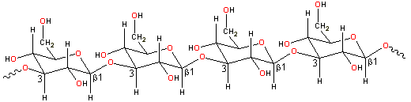

Alcaligenes faecalis
Curdlan forms elastic gels, insoluble in cold water.
Curdlan is a microbial fermentation extracellular gum. It is a polymer prepared
commercially from a mutant strain of Alcaligenes faecalis var. myxogenes. It is relatively expensive by weight but becoming
somewhat less so.
1-3 β-D glucan

Curdlan gum is a moderate molecular mass (molecular weight) (DP ≈ 450) unbranched
linear 1 3 β-D
glucan (M.Wt. ≈ 100,000) with no side-chains. [Back to Top
3 β-D
glucan (M.Wt. ≈ 100,000) with no side-chains. [Back to Top  ]
]
Curdlan gum has junction zones consisting of parallel in-phase triple
right-handed six-fold helices (fiber repeat 18.78 Å) [503],
forming an uncharged rigid rod-like conformation. The chains are
held by intra-helix hydrogen bonding between the 2-OH groups. Each
such group hydrogen-bonds, by donation to one chain and acceptance
from the other chain, on the inside of the helix axis. As single-stranded curdlan forms a six-fold helix stabilized by a chain of
intramolecular hydrogen bonds between neighboring 2-OH groups, the
change from single to triple helices involves these 2-OH groups
changing their hydrogen-bonding allegiance from intramolecular to
intermolecular. [Back to Top  ]
]
Curdlan gum is tasteless and produces a retortable, freezable, elastic food gel. It is insoluble in cold water, a but aqueous suspensions plasticize and briefly dissolve before producing reversible gels (that is, curdling, hence its name) on heating to around 55 °C [504]. Heating at higher temperatures produces more resilient irreversible gels, which then remain on cooling by aggregating the triple-helical structures and syneresis. The aggregated 'curds' consist of mixtures of single and triple helices. Salts tend to prevent curdlan from gelling, and their presence weakens the final gels [504].
Scleroglucan (from Sclerotinia sclerotiorum) is also a
1 3 β-D
glucan. However, it has additional 1
3 β-D
glucan. However, it has additional 1 6 β-links
that confer solubility under ambient conditions but do not significantly
interfere with a triple helix gelling process similar to curdlan.
Similar polysaccharides can also be extracted from other sources
such as waste yeast.
6 β-links
that confer solubility under ambient conditions but do not significantly
interfere with a triple helix gelling process similar to curdlan.
Similar polysaccharides can also be extracted from other sources
such as waste yeast.
Interactive structures are available (Jmol). [Back to Top  ]
]
a Curdlan is soluble in dimethyl sulfoxide [1457]. [Back]
Home | Site Index | Hydrocolloids | Polysaccharide hydration | hydrogen-bonding | LSBU | Top
This page was established in 20032 and last updated by Martin Chaplin on 2 August, 2021